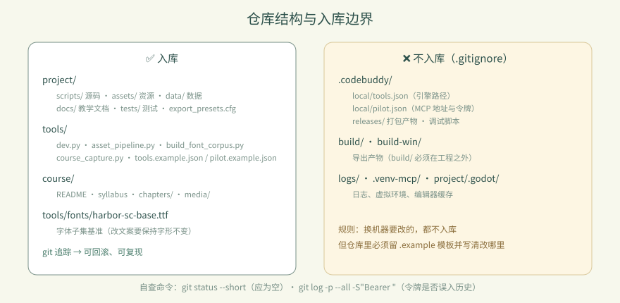
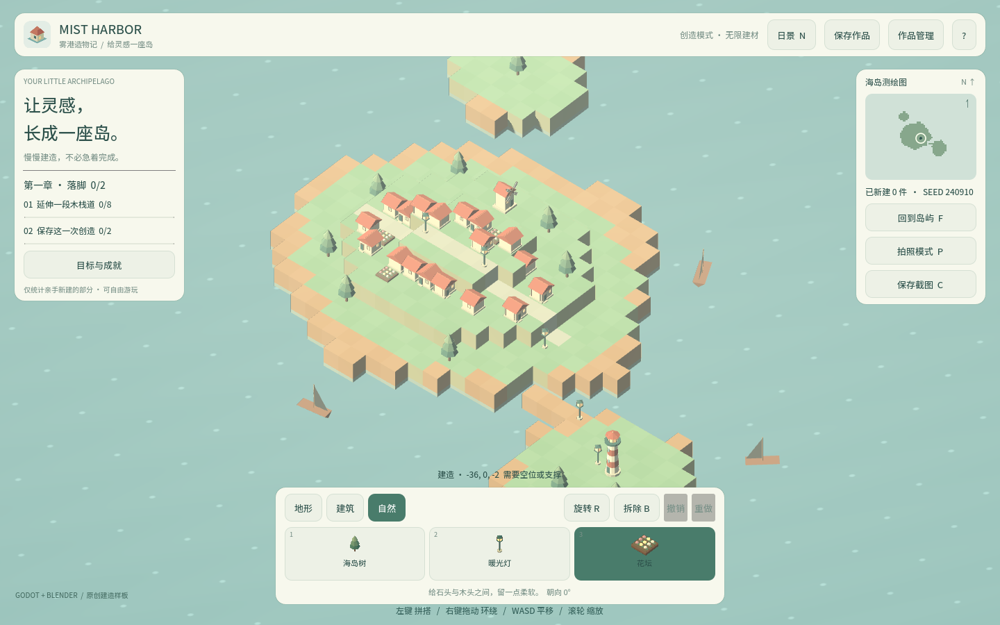
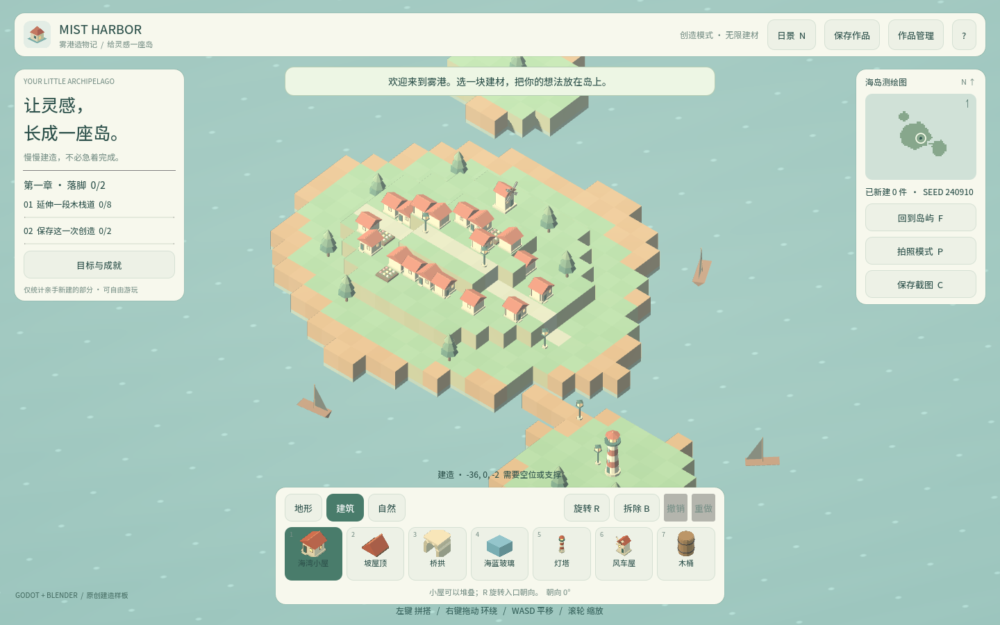
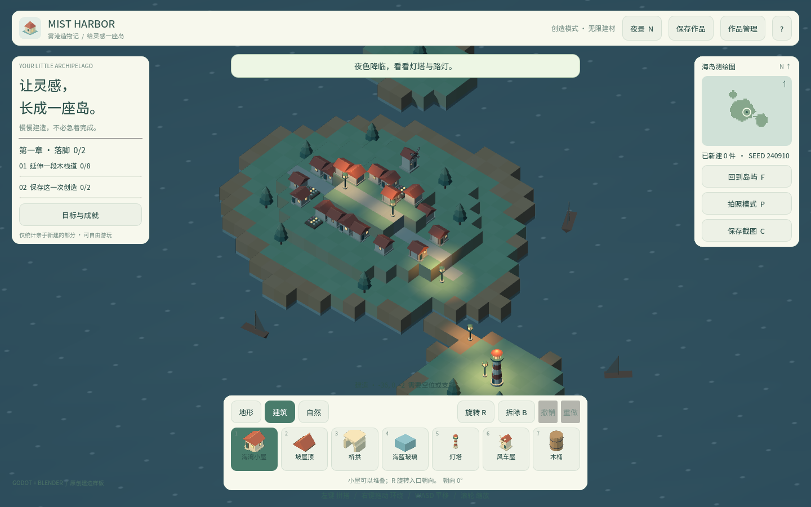
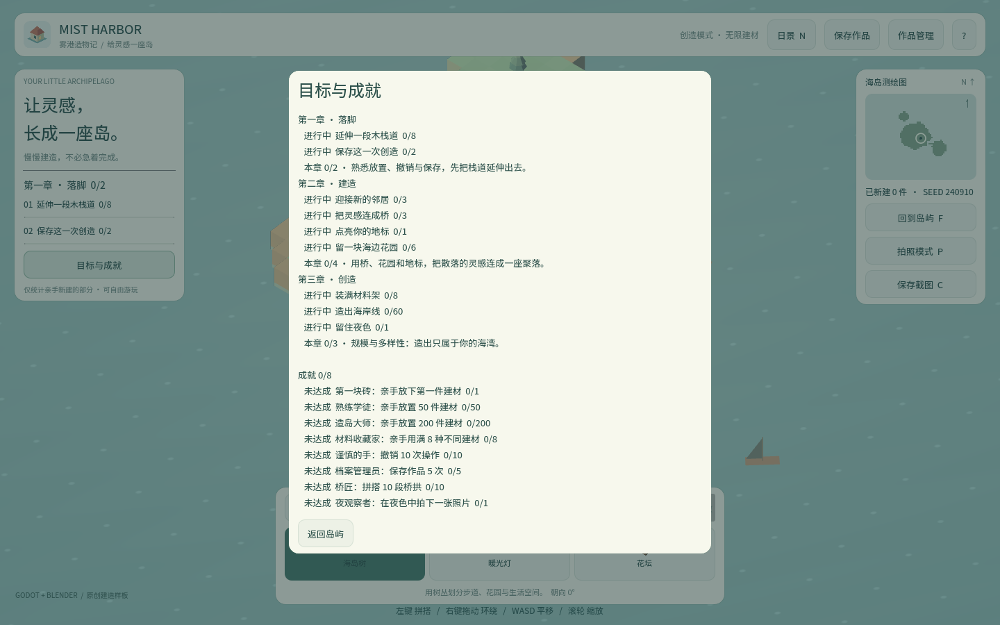

卷 0 · 第 02 章 工具箱：四件武器与两条 MCP
本章目标：说清 Godot / Blender / MCP / Git 各自负责什么，为什么引擎版本要"锁"，
以及为什么 Blender 用远程 MCP、Godot 必须用本地 MCP。
对应任务：T02 / T04 | 对应提交：9e5ef74（升级 4.7）、b79d246（切回本地 Godot MCP）
2.1 四件武器，各管一段
| 工具 | 管什么 | 不管什么 |
|---|---|---|
| --- | --- | --- |
| Godot 4.7 | 场景、脚本、渲染、导入、导出 | 建模 |
| Blender 4.2 / 5.2 | 程序化建模（bpy 脚本） | 游戏逻辑 |
| MCP 服务 | 让 Agent 能"操作"上面两个软件 | 替你做设计决策 |
| Git | 版本、回滚、协作、发布 | 大文件（GLB 也别滥用） |
一句话：Blender 造零件，Godot 组装成游戏，MCP 让 Agent 能拧螺丝，Git 保证随时能反悔。
🖼 配图：
assets/shots/02/02-game-ready.png—— 四个工具协同后的成果画面。
2.2 引擎版本：为什么必须"锁"
这不是洁癖，是血的教训。本项目经历过一次升级：
| 升级前 | 升级后 | |
|---|---|---|
| --- | --- | --- |
| 引擎 | 4.4.stable | 4.7.stable |
project.godot | features=PackedStringArray("4.4", ...) | "4.7" |
| 导出模板 | 只装了 4.4 | 需要 4.7（1.2GB，分块下载） |
| 测试断言 | 写死"13 种建材""8 个 GLB" | 全部改为从 palette.json 推导 |
三个必须知道的规则：
- Godot 高版本打开低版本工程会升级它，且回不去——所以升级前必须 git 有提交
- 导出模板版本必须和引擎完全一致，差一个小版本都导不出来
- 测试断言不要写死数量（"13 种建材"在加了木桶后立刻变红）。正确做法是从数据源推导：
var expected := (palette_file as Dictionary).get("items", []).size()
check(model.palette.size() == expected, "palette matches data/palette.json")📌 本实训约定：引擎版本只写在
.codebuddy/local/tools.json（本机），
工程侧写在project.godot的config/features（给引擎看），
文档侧写在TOOLCHAIN.md（给人看）。三处必须一致。
2.3 两台 MCP：一个远程、一个本地（关键决策）
web-cb-blender-pilot → 远程 streamableHttp → 负责"造资产"
godot → 本地 stdio (npx) → 负责"驱动本地 Godot"远程 Blender pilot：异步作业模型
它不是"连上 Blender 实时改"，而是提交作业 → 轮询 → 取产物：
blender_doctor 探测远端运行环境，并返回建模模板（第一次必调）
blender_submit 提交一段 bpy 脚本（单文件内联，≤256KiB），立刻返回 task_id
blender_observe 轮询状态 queued/running/succeeded/failed/timed_out
blender_artifacts 列出产物：GLB、预览 PNG、glb-inspect.json、日志、回执硬性约束（写脚本时必须遵守，否则任务会失败）：
- 单文件内联，不能 import 本地模块 → 每件资产一个自包含脚本
- 米制、Z-up，执行器负责导出与坐标轴转换
- 只建几何与材质，不要相机/灯光/World/额外
.blend - 材质插槽按模板名写：
Base Color/Roughness/Metallic/Transmission Weight/IOR
本地 Godot MCP：为什么不能也用远程
远程 Godot pilot 有两个致命限制：
| 限制 | 后果 |
|---|---|
| --- | --- |
| 服务端锁 4.7.1（我们是 4.7.stable） | 版本不完全一致 |
godot_apply_files 只接受 UTF-8 文本 | GLB、字体、图标这些二进制传不上去 |
《雾港》有 9 个 GLB + 一个子集字体 + 图标 SVG——二进制是主体，
所以 Godot 侧只能用本地 MCP（直接操作你磁盘上的工程）。
🖼 配图：
02-dock-nature.png—— 建材栏里的 GLB 缩略图（远程 Blender 造、本地 Godot 导入的成果）。
📊 示意图：assets/diagrams/mcp-topology.svg
2.3.1 🖥 本地路线：手动接通两台 MCP
云端 agent（web-cb）学员跳过本节，直接看 2.3.2。本节只在本地环境需要。
编辑用户级配置 C:\Users\<你>\.codebuddy\mcp.json（这个文件不入仓库）：
{
"mcpServers": {
"web-cb-blender-pilot": {
"type": "streamableHttp",
"url": "http://<pilot-host>:18765/mcp",
"headers": { "Authorization": "Bearer <你的令牌>" },
"disabled": false
},
"godot": {
"command": "cmd",
"args": ["/c", "npx", "-y", "@coding-solo/godot-mcp"],
"cwd": "e:/Mist_Harbor/project",
"env": { "GODOT_PATH": "D:/Godot_v4.7/Godot_v4.7-stable_win64_console.exe", "DEBUG": "true" },
"disabled": false
}
}
}- Windows 上
npx需要cmd /c包一层，否则 stdio 起不来 cwd指向project/，这样 Godot MCP 的相对路径才对- 远程 Godot pilot（
godot-mcp）保持disabled: true，等它支持二进制再说
验证两边都通了（各列出一次工具）：
# 远程 Blender pilot：期望 5 个工具
node .codebuddy/local/probe-http-mcp.mjs http://<pilot-host>:18765/mcp <令牌>
# 本地 Godot：期望 14 个工具，并回报 4.7.stable
$env:GODOT_PATH='D:/Godot_v4.7/Godot_v4.7-stable_win64_console.exe'
node .codebuddy/local/probe-mcp.mjs npx -y @coding-solo/godot-mcp🤖 不想手改？直接贴给 Agent：
把这两个 MCP 服务写入 C:\Users\<你>\.codebuddy\mcp.json：
web-cb-blender-pilot（streamableHttp，地址与令牌我稍后给你）与
godot（本地 npx @coding-solo/godot-mcp，GODOT_PATH 指向 D:/Godot_v4.7 的 console 版，
cwd 为工程目录）。写完后用探针列出两边工具数量并贴给我。
约束：令牌只写入被 gitignore 的用户级配置，不要写进仓库任何文件。2.3.2 🌩 在云端 agent（web-cb）里：这些已经配好了
| 项目 | 🖥 本地路线 | 🌩 云端 agent（web-cb） |
|---|---|---|
| --- | --- | --- |
| MCP 服务 | 手改用户级 mcp.json + 令牌 | 平台预置并托管令牌，学员无需配置 |
| 引擎与 Blender | 自己装，写 tools.json | 平台镜像内置 |
| 基础仓库 | 自己 git clone | 平台按 PBL 项目预建 |
| 托管/预览 | 自己起本地服务 | 平台提供预览入口 |
既然不用配，为什么还要学这一章？ 因为排查问题时你必须能回答三个问题：
- 这次操作走的是哪条链路（Agent → MCP → Godot/Blender → 我的文件）？
- 失败发生在哪一段（脚本被拒？引擎导入失败？还是我的断言写错了）？
- 这一段在本地要怎么复现（换成
dev.py/探针命令单独跑一次）？
📌 判断口诀：先分段，再复现。 用探针单独问 MCP（第 2.3.1 的两条命令），
用dev.py test单独问引擎，两者都过还出问题，才是你的业务代码。
2.4 Git：什么该入库，什么不该
✅ 入库：project/（源码、资源、数据、文档、测试）、tools/、course/、配置文件
❌ 不入库：.codebuddy/（本机路径、令牌、产物）、logs/、build/、build-win/、.venv-mcp/为什么 .codebuddy/ 整个忽略？ 因为它装的是"你这台机器"的信息：
| 文件 | 内容 | 模板 |
|---|---|---|
| --- | --- | --- |
.codebuddy/local/tools.json | Godot/Blender 路径 | tools/tools.example.json |
.codebuddy/local/pilot.json | 远程 MCP 地址与令牌 | tools/pilot.example.json |
规则：凡是"换台机器就要改"的配置，都不入库；但必须在仓库里留一个 .example 模板，
并写清"复制后改哪里"。否则三个月后你自己都装不回来。
🌩 云端 agent（web-cb）里，这层"机器相关配置"由平台托管：仓库是预建的，
令牌在平台侧，学员 clone 下来的就是干净的工程。上面两条*.example.json
依然存在——它们是本地路线的说明书，也是你理解"平台替你做了什么"的对照表。

⚠️ 令牌属于敏感信息。本项目把它放在被忽略的
pilot.json里；
如果你要公开仓库，请确认没有任何令牌被git add。可用git log -p --all -S"Bearer "自查历史里是否混入过。
2.5 常见坑速查（本章）
| 现象 | 原因 | 处理 |
|---|---|---|
| --- | --- | --- |
| 用 4.7 打开工程后 4.4 打不开了 | 工程已被升级 | 靠 git 回滚，不要手动改 features |
export-web 报缺模板 | 模板版本与引擎不一致 | 用 tools/fetch_templates.py 装 4.7 模板 |
远程 Blender 任务 script_failed | 脚本违反了四条约束 | 看回执与日志（管线会自动拉下来） |
| 任务 id 重复被拒 | 失败的 id 也被占用 | 用 --retry 生成新 id |
| Agent 说"改好了"但没跑测试 | 你没要求 | 提示词里显式写验证命令与"不许删断言" |
2.6 本章作业
- 打开
.codebuddy/local/tools.json，确认两条路径在你机器上真实存在（用Test-Path验证） - 用探针列出两台 MCP 的工具，确认 Blender 侧 5 个、Godot 侧 14 个
- 回答：为什么《雾港》的 Godot 侧不能用远程 pilot？（提示：二进制）
- 在
TOOLCHAIN.md里补一条你自己的"换机器清单"
🎓 教学提示（给教师 / 直播主）
- 概念锚点：本章最容易混淆的是"MCP 是什么"。用一个比喻：MCP 是 Agent 的手，
Godot/Blender 是机床；没有手，Agent 只能给你文字建议。
- 课堂演示：先让 Agent 只"说"怎么做（不给 MCP），再装上 MCP 让它真的做一次，
对比体验差异——学生一眼就懂 MCP 的价值。
- 讨论题：远程 MCP 与本地 MCP 各有何代价？（远程：带宽/二进制受限；本地：环境依赖）
- 常见误解纠正：学生常以为"Agent 有 MCP 就能全自动做游戏"。强调
G-V-C 循环里的 V（验证）永远由人和命令负责，Agent 不能自证成功。
- 批改要点：作业 3 必须答出"二进制资产传不上去"，只答"版本不同"给一半分。
🖼 本章图集




📹 录屏分镜（9 分钟）
| 时间 | 画面 | 解说词要点 |
|---|---|---|
| --- | --- | --- |
| 00:00–00:45 | 四件工具的图标拼贴 + 游戏画面 | "四件武器，各管一段。" |
| 00:45–02:00 | tools.json 与 project.godot 的 features | "版本锁三处要一致：本机、工程、文档。" |
| 02:00–03:20 | 对比 4.4→4.7 升级的三个代价 | "高版本打开低版本工程，回不去。" |
| 03:20–05:00 | 远程 Blender：submit/observe/artifacts 三步 | "不是实时连线，是交作业、等通知、取成品。" |
| 05:00–06:20 | 远程 Godot 的 apply_files 只收文本 | "二进制传不上去，所以 Godot 必须本地。" |
| 06:20–07:30 | .gitignore 与两个 example 模板 | "换机器要改的，都不入库。" |
| 07:30–09:00 | 作业 + 预告（下一章：让 Agent 帮你跑通） |
🎬 视频位（待录制）
把录好的视频放到course/media/video/02/（mp4 / webm / mov），重新执行 python tools/course_build.py 即会自动内嵌；首帧默认用本章第一张截图作为封面。分镜脚本见上一节。🖼 配图清单
| 文件名 | 内容 | 生成方式 |
|---|---|---|
| --- | --- | --- |
02-game-ready.png | 工具链就绪后的游戏首屏 | python tools/course_capture.py --chapter 02 |
02-night.png | 按 N 后的夜景 | 同上 |
02-dock-nature.png | 自然分类 + 木桶被选中 | 同上 |
02-progress-panel.png | 目标与成就面板 | 同上 |
🎥 直播脚本（L1 片段，12 分钟）
- 开场投票："你觉得远程 MCP 和本地 MCP，哪个更适合 Godot？"（先投票再演示，反转更有记忆点）
- 演示：故意用远程 Godot pilot 尝试上传 GLB，展示它失败 → 引出二进制限制
- 互动：让观众在自己的机器上跑探针，报出各自的工具数量
- 收尾：强调"验证由人负责"
❓ 本章 FAQ
Q：能不能两台都用远程？
A：等远程 Godot 支持二进制上传就可以。届时把 mcp.json 里 godot-mcp 的 disabled 改回 false 即可。
Q：Blender 本地 4.2、远程 5.2，脚本会不兼容吗？
A：本项目只用最基础的 bpy API（primitive、modifier、materials），两个版本都验证过。
真出问题以远程为准，因为资产是从远程产出的。
Q：MCP 令牌泄露怎么办？
A：立即让服务方吊销令牌；仓库侧用 git log -p --all -S"Bearer " 检查，必要时重写历史。